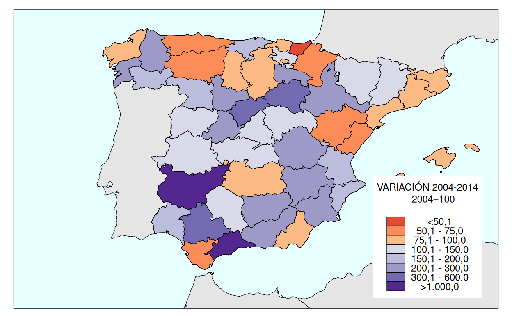
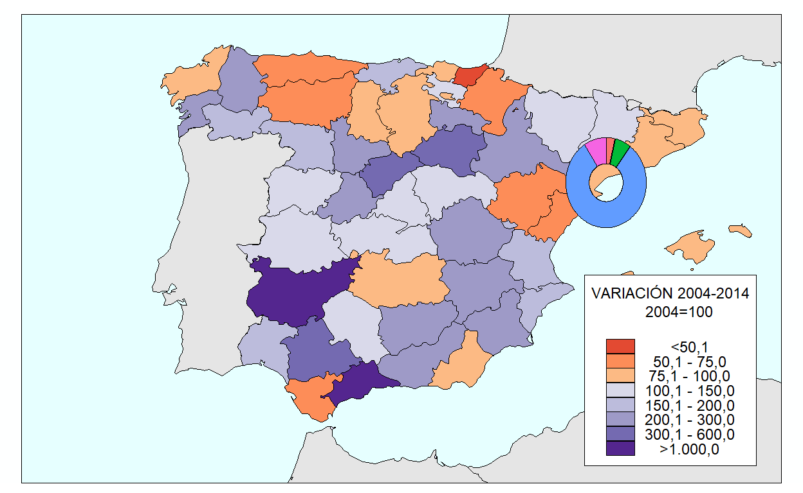
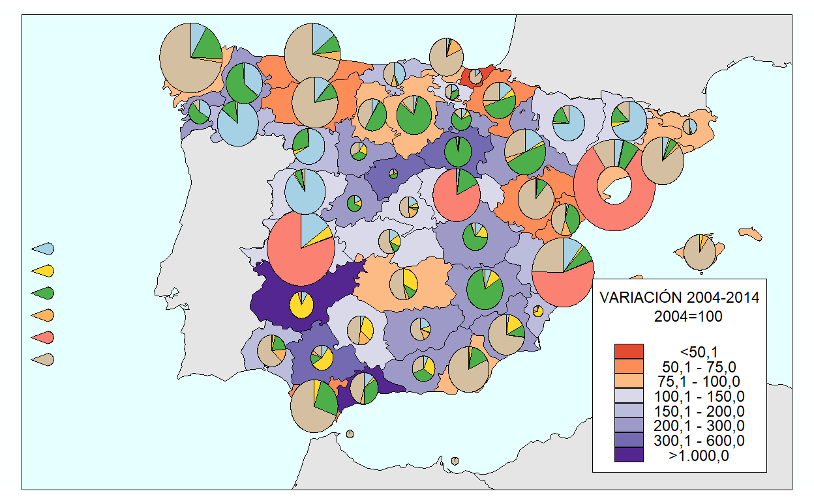
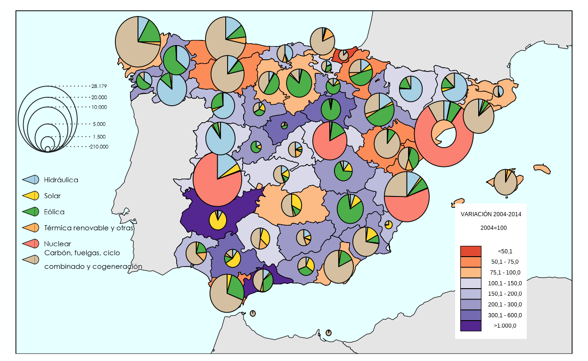
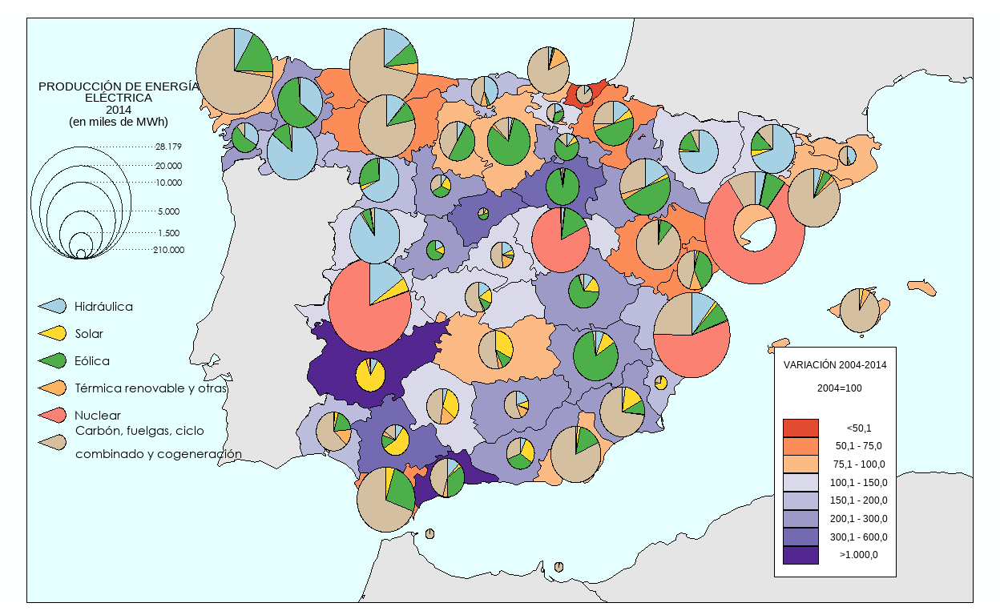
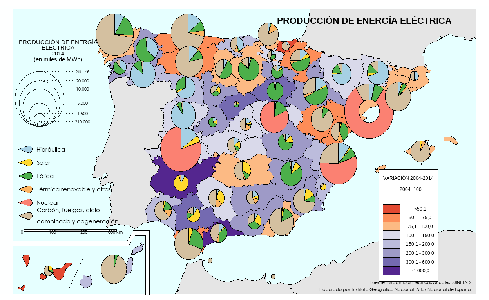
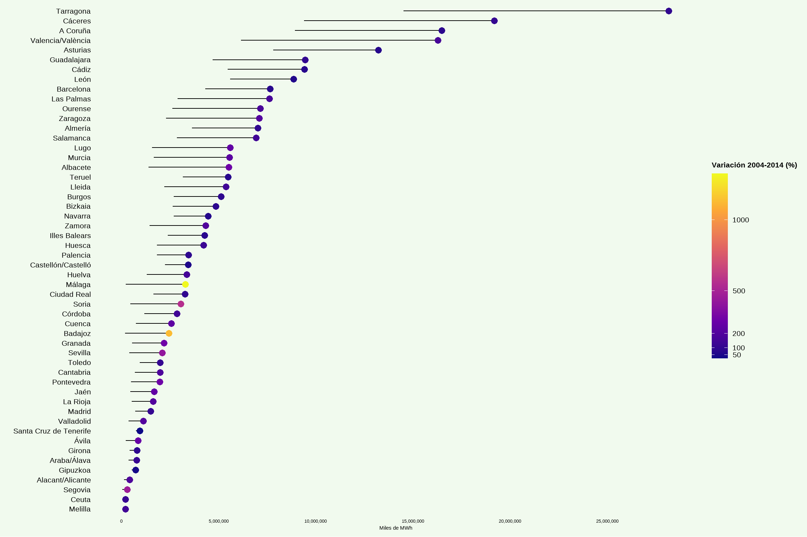
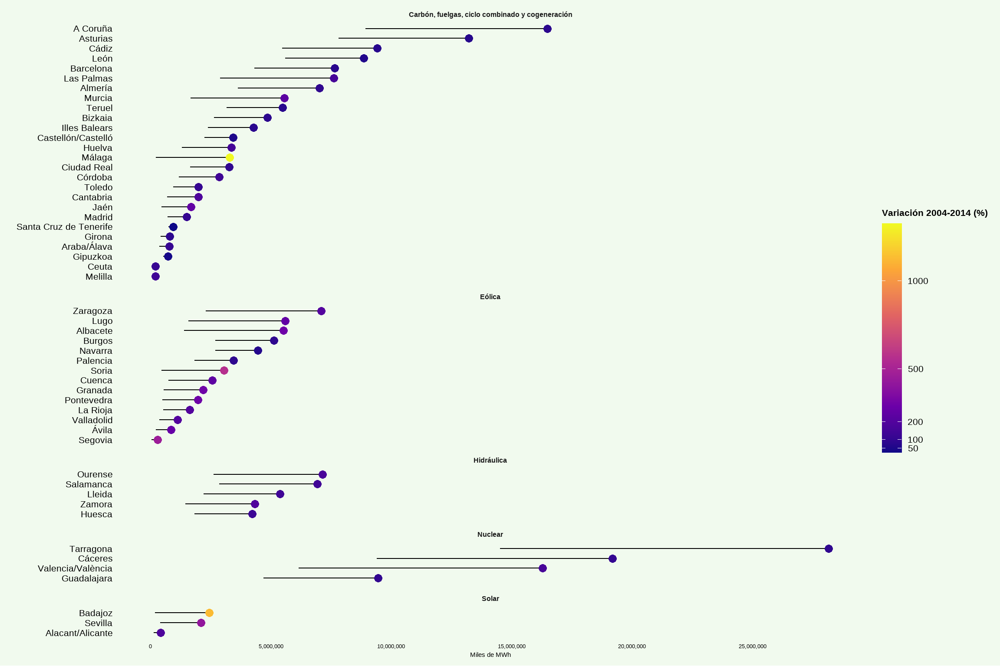

The map that I’ll replicate and improve is part of the National Atlas of Spain made by the National Institute of Geography in 2014.
There are three elements represented in this map. The colors within the provinces represent how much variation in terms of energy production there has been made in each province between 2004 and 2014. The pie charts represent both the amount of energy that is produced in each of the 52 provinces by the size of the pie chart and the source of this energy.
The Data
The data that is needed to produce this map is available in the following website: CNIG.
The downloaded file will consist of a folder with a couple of files that will be necessary for the reproduction of our visualization. Even if we get 17 files in the data folder, there are only 3 main ones which will be using: an .xls file with all our data and two shapefiles, which is an older format that contains geometrical information of both the spanish peninsula, and its islands.
The excel has 8 sheets in it, one of them gathering the data on the variation in energy production of each province of Spain from 2004 to 2014 and the other seven representing the energy production by energy source. Sheet nº 9453 takes on hydropower, sheet nº 9454 windpower, sheet nº9454 9455 solar, sheet nº 9456 renowable thermal, sheet nº 9457 carbon, gas, cogeneration, among other sources related to gas, sheet nº 9458 nuclear, sheet nº 9459 is the energy total and sheet nº 9560 is the variation between 2004 and 2014.
In order to put all the information in a tidy dataset, I’ll get each sheet in a separable sheet, selecting only the relevant variables, since there is explanatory metadata in each sheet. After that, I’ll add a “Type” variable to each small dataset. Then, I’ll bind everything together, resulting in our tidy “electricity_” dataset. I called it like that to differenciate it with the “electricity” dataset that will be used for the replication, which has data that won’t be needed for our improved version.
electricity_excel <- "produccion_electricidad.xls"
hydro_2014 <- read_excel(electricity_excel, sheet = "Variable_9453") |>
select("Nombre unidad territorial", "Valor del dato") |>
rename(Province = "Nombre unidad territorial", MWh = "Valor del dato") |>
mutate(Type = "Hidráulica")
wind_power_2014 <- read_excel(electricity_excel, sheet = "Variable_9454") |>
select("Nombre unidad territorial", "Valor del dato") |>
rename(Province = "Nombre unidad territorial", MWh = "Valor del dato") |>
mutate(Type = "Eólica")
solar_2014 <- read_excel(electricity_excel, sheet = "Variable_9455") |>
select("Nombre unidad territorial", "Valor del dato") |>
rename(Province = "Nombre unidad territorial", MWh = "Valor del dato") |>
mutate(Type = "Solar")
rw_thermal_2014 <- read_excel(electricity_excel, sheet = "Variable_9456") |>
select("Nombre unidad territorial", "Valor del dato") |>
rename(Province = "Nombre unidad territorial", MWh = "Valor del dato") |>
mutate(Type = "Térmica renovable y otras")
carbon_and_gas_2014 <- read_excel(electricity_excel, sheet = "Variable_9457") |>
select("Nombre unidad territorial", "Valor del dato") |>
rename(Province = "Nombre unidad territorial", MWh = "Valor del dato") |>
mutate(Type = "Carbón, fuelgas, ciclo combinado y cogeneración")
nuclear_2014 <- read_excel(electricity_excel, sheet = "Variable_9458") |>
select("Nombre unidad territorial", "Valor del dato") |>
rename(Province = "Nombre unidad territorial", MWh = "Valor del dato") |>
mutate(Type = "Nuclear")
total_2014 <- read_excel(electricity_excel, sheet = "Variable_9459") |>
select("Nombre unidad territorial", "Valor del dato") |>
rename(Province = "Nombre unidad territorial", MWh = "Valor del dato") |>
mutate(Type = "Total")
variation_2004_2014 <- read_excel(electricity_excel, sheet = "Variable_9460") |>
select("Nombre unidad territorial", "Valor del dato") |>
rename(Province = "Nombre unidad territorial", MWh = "Valor del dato") |>
mutate(Type = "Variación 2004 - 2014")
electricity_ <- bind_rows(
hydro_2014, wind_power_2014, solar_2014, rw_thermal_2014,
carbon_and_gas_2014, nuclear_2014, total_2014, variation_2004_2014)
electricity_# A tibble: 416 × 3
Province MWh Type
<chr> <dbl> <chr>
1 Araba/Álava 151127. Hidráulica
2 Albacete 313163. Hidráulica
3 Alacant/Alicante 2631. Hidráulica
4 Almería 48040. Hidráulica
5 Ávila 158772. Hidráulica
6 Badajoz 204660 Hidráulica
7 Illes Balears 0 Hidráulica
8 Barcelona 359347. Hidráulica
9 Burgos 152779. Hidráulica
10 Cáceres 2912760. Hidráulica
# ℹ 406 more rowsThe variation of energy production between 2004 and 2014 is being placed inside the Type variable. Furthermore, in the original visualization the variation is represented in intervals of Megawatts per hour. Therefore we have to add a new variable that corresponds to the brackets of the variation legend.
category_variation <- electricity_ |>
filter(Type == "Variación 2004 - 2014") |>
mutate(
Energy_Variation = case_when(
MWh < 50.1 ~ "<50,1",
MWh >= 50.1 & MWh <= 75.0 ~ "50,1 - 75,0",
MWh > 75.0 & MWh <= 100.0 ~ "75,1 - 100,0",
MWh > 100.0 & MWh <= 150.0 ~ "100,1 - 150,0",
MWh > 150.0 & MWh <= 200.0 ~ "150,1 - 200,0",
MWh > 200.0 & MWh <= 300.0 ~ "200,1 - 300,0",
MWh > 300.0 & MWh <= 600.0 ~ "300,1 - 600,0",
MWh > 1000.0 ~ ">1.000,0",
TRUE ~ NA_character_),
Energy_Variation = factor(
Energy_Variation,
levels = c("<50,1", "50,1 - 75,0", "75,1 - 100,0",
"100,1 - 150,0", "150,1 - 200,0",
"200,1 - 300,0", "300,1 - 600,0", ">1.000,0"))) |>
select(Province, Energy_Variation)
electricity <- category_variation |> left_join(electricity_, by = c("Province"))
electricity# A tibble: 416 × 4
Province Energy_Variation MWh Type
<chr> <fct> <dbl> <chr>
1 Araba/Álava 100,1 - 150,0 151127. Hidráulica
2 Araba/Álava 100,1 - 150,0 257584. Eólica
3 Araba/Álava 100,1 - 150,0 17653. Solar
4 Araba/Álava 100,1 - 150,0 7182. Térmica renovable y otras
5 Araba/Álava 100,1 - 150,0 359081 Carbón, fuelgas, ciclo combi…
6 Araba/Álava 100,1 - 150,0 0 Nuclear
7 Araba/Álava 100,1 - 150,0 792627. Total
8 Araba/Álava 100,1 - 150,0 114. Variación 2004 - 2014
9 Albacete 200,1 - 300,0 313163. Hidráulica
10 Albacete 200,1 - 300,0 4513126. Eólica
# ℹ 406 more rowsThe data folder also has two stringfiles to create the maps of Spain and the Canary Islands. In order to fit the Canary Islands map in the visualization, we’ll be doing two joint datasets, one for each stringfile. Later on, I will first create the plot with one shapefile and then with the other, so that I can superpose them afterwards in the right framing. To read the files, we will use the function st_read() from the “sf” package.
peninsula <- st_read("se89_10_admin_prov_a_x_20140101.shp")Reading layer `se89_10_admin_prov_a_x_20140101' from data source
`C:\Users\NFuru\Desktop\MASTER\DATA VISUALIZATION\Final Ugly Electric Bull\dataviz\_projects\2025\100564888\se89_10_admin_prov_a_x_20140101.shp'
using driver `ESRI Shapefile'
Simple feature collection with 50 features and 18 fields
Geometry type: MULTIPOLYGON
Dimension: XY
Bounding box: xmin: -9.298027 ymin: 35.25069 xmax: 4.314508 ymax: 43.77594
Geodetic CRS: ETRS89canary_islands <- st_read("se89_10_admin_prov_a_y_20140101.shp")Reading layer `se89_10_admin_prov_a_y_20140101' from data source
`C:\Users\NFuru\Desktop\MASTER\DATA VISUALIZATION\Final Ugly Electric Bull\dataviz\_projects\2025\100564888\se89_10_admin_prov_a_y_20140101.shp'
using driver `ESRI Shapefile'
Simple feature collection with 2 features and 18 fields
Geometry type: MULTIPOLYGON
Dimension: XY
Bounding box: xmin: -18.16066 ymin: 27.638 xmax: -13.4192 ymax: 29.29093
Geodetic CRS: ETRS89With this, we’d get the shape of Spain, but there is one thing missing: the shapes of its bordering countries. Almost all maps that are not minimalistic in style provide information on the bordering countries to have a reference of where it stands. Since we don’t have that information in the folder, we’ll get the shapes via the GiscoR package (GISCO stands for Geographic Information System of the - European - Commision). Since the data for the shape of the borders comes from a different source, we need to make sure that both use the same CRS (Coordinate Reference System), so that there isn’t any offsets in the limits between the countries.
library(giscoR)
neighbours <- gisco_get_countries(
country = c("Portugal", "France", "Marocco", "Algeria", "Andorra"),
year = "2013",
resolution = "10")Replication of the map
Now that we have all the data necessary for our map, we can start plotting the background map, that features the variation in energy from 2004 to 2014. To do that, we have to use geom_sf(), the function that creates geometric objects. Since we want the lines to be black and slightly thick, we’ll specify that directly in the geom_sf() function.
map_replica <-
ggplot(electricity_peninsula) +
geom_sf(data = neighbours,
fill = "#e5e5e5",
color = "black",
size = 0.2,) +
geom_sf(aes(fill = Energy_Variation),
color = "black", size = 0.2)
map_replica
There are three noticeable things right of the bat: the framing, the colors and the background, The framing is like that because it plots all pieces of land of the countries that where plotted, meaning that also places that are far of Spain will be plotted. To change the coordinates where the limits of the plot will be, we have to use coord_sf.
map_replica <- map_replica +
coord_sf(
xlim = c(-13, 5.5),
ylim = c(34.75, 44.5),
expand = FALSE)
map_replica
To change the background, we have to first eliminate the theme that is there and replace with our own. We want a grey background, a black frame and the sea (interpreted by ggplot as the “panel.background”) to be blue.
frame <- tibble(
x = c(-12.5, 5, 5, -12.5, -12.5),
y = c(34.75, 34.75, 44.4, 44.4, 34.75))
map_replica <-
map_replica +
theme_void() + # theme_void() eliminates the x and y axis
geom_polygon( # To make the grey background
data = tibble(
x = c(-15, 7, 7, -15, -15, -12.5, -12.5, 5, 5, -12.5, -12.5, -15),
y = c(32, 32, 46, 46, 32, 34.75, 44.4, 44.4, 34.75, 34.75, 32, 32)),
aes(x = x, y = y),
fill = "#feffff") +
theme( # panel.background changes the background
plot.background = element_blank(),
panel.background = element_rect(
fill = "#e6ffff",
color = NA),
aspect.ratio = # to make it always look the same
(44.5 - 34.75) / (5.5 - (-11))) +
geom_path( # this creates the frame
data = frame,
aes(x = x, y = y),
colour = "black",
linewidth = 0.3)
map_replica
Now that we have handled the background, it’s time to change the legend that maps the colors of the provinces. The HEX value of the legend will be extracted with an online color picker. Each color will be mapped to a variation category with scale_fill_manual().
map_replica <-
map_replica +
scale_fill_manual( # This function is used to give your own color palette
values = c(
"<50,1" = "#e34a32",
"50,1 - 75,0" = "#fd8d58",
"75,1 - 100,0" = "#fcba84",
"100,1 - 150,0" = "#d9d9ea",
"150,1 - 200,0" = "#bcbcdc",
"200,1 - 300,0" = "#9e9ac7",
"300,1 - 600,0" = "#746ab1",
">1.000,0" = "#54268f"),
name =
"VARIACIÓN 2004-2014
2004=100
") +
guides(fill = guide_legend(
direction = "vertical", # Vertical legend
title.position = "top", # Title on top
title.hjust = 0.5, # Centered title
label.position = "right", # Where each category is
keywidth = unit(0.6, "cm"), # This makes the legend wider
keyheight = unit(0.31, "cm"), # This makes the legend longer
)) +
theme(
legend.position = c(0.835, 0.238), # Position of the legend
legend.background = element_rect( # Background of the legend
fill = "#FFFFFF", color = "black"),
legend.text = element_text(size = 9, hjust = 0.5), # Text of the categories of the legends
legend.title = element_text(size = 9, lineheight = 1, margin = margin(b = 1)),
legend.margin =
margin(6, 4, 6, 4), # Margin of the legend
legend.key =
element_rect(color = NA, fill = NA),
legend.key.spacing.y = unit(-0.01, "cm"))
map_replica
To continue with the rest, sadly, we have to start with the pie charts. First, we have to calculate the centroid of each province, since most are centered in the province..
electricity_peninsula <- electricity_peninsula |> # First we calculate the centre of each
mutate(centre = st_centroid(geometry)) |> # province by using st_centroid()
mutate(longitude = st_coordinates(centre)[,1], # Now we separate longitude and latitude
latitude = st_coordinates(centre)[,2]) # IS THIS NECESSARY?
electricity_canary <- electricity_canary |>
mutate(centre = st_centroid(geometry)) |> # province by using st_centroid()
mutate(longitude = st_coordinates(centre)[,1], # Now we separate longitude and latitude
latitude = st_coordinates(centre)[,2])In order to do the pie charts, we have to drop the geometries that we had in the table to avoid issues in the pivot we have to perform. Getting the coefficient to get the radius was really a matter of trial and error. Since we eventually will have to do the same for the Canary Islands, we’ll perform the same code for the Canary Islands table.
untidy_peninsula <- electricity_peninsula |>
st_drop_geometry() |>
pivot_wider(
names_from = Type,
values_from = MWh) |>
mutate(
radius = sqrt(Total / pi) * 0.00031) # Changing the value of the coefficient until it fits
untidy_canary <- electricity_canary |>
st_drop_geometry() |>
pivot_wider(
names_from = Type,
values_from = MWh) |>
mutate(
radius = sqrt(Total / pi) * 0.00031) Alright, now the fun part. If we plotted the pie charts now, it won’t look like the original graph, since not all pie charts are centered. We need to change ever so slightly the position some of the pie charts up front. The coefficients are done by trial and error.
untidy_peninsula <- untidy_peninsula |>
mutate(
longitude_moved = case_when(
Province == "A Coruña" ~ longitude - 0.2,
Province == "Asturias" ~ longitude + 0.1,
Province == "Lleida" ~ longitude + 0.25,
Province == "Barcelona" ~ longitude + 0.075,
Province == "Tarragona" ~ longitude + 0.15,
Province == "Valencia/València" ~ longitude + 0.6,
Province == "Alacant/Alicante" ~ longitude - 0.2,
Province == "Granada" ~ longitude - 0.1,
Province == "Cádiz" ~ longitude - 0.1,
Province == "Ceuta" ~ longitude + 0.3,
Province == "Melilla" ~ longitude + 0.3,
TRUE ~ longitude
),
latitude_moved = case_when(
Province == "A Coruña" ~ latitude + 0.4,
Province == "Asturias" ~ latitude + 0.3,
Province == "Bizkaia" ~ latitude + 0.3,
Province == "Guadalajara" ~ latitude - 0.075 ,
Province == "Lleida" ~ latitude + 0.2,
Province == "Barcelona" ~ latitude - 0.3,
Province == "Tarragona" ~ latitude - 0.15,
Province == "Valencia/València" ~ latitude - 0.2,
Province == "Alacant/Alicante" ~ latitude - 0.1,
Province == "Murcia" ~ latitude - 0.1,
Province == "Granada" ~ latitude - 0.1,
Province == "Cádiz" ~ latitude - 0.1,
Province == "Melilla" ~ latitude + 0.05,
Province == "Cáceres" ~ latitude - 0.05,
Province == "Badajoz" ~ latitude - 0.2,
TRUE ~ latitude))When looking into the map, there is one province, Tarragona, that, because the pie chart would be too big, the designers decided to make it a doughnut instead of a pie chart. Subsequently, the doughnut pie will be our first layer since other pie charts are superposed to it.. In order to plot the pie charts and the doughnut, given that it is so difficult to do with base ggplot, the function geom_scatterpie() of the scatterplot package will be used.
map_replica <- map_replica +
new_scale_fill() +
geom_scatterpie(data = untidy_peninsula |> # This wil only apply to the doughnut pie
filter(
Province == "Tarragona"),
aes(x = longitude_moved, y = latitude_moved, r = radius),
cols =
c("Hidráulica", "Solar", "Eólica", # The order of the concatenate gives us the order
"Térmica renovable y otras", # of the colors clockwise
"Nuclear",
"Carbón, fuelgas, ciclo combinado y cogeneración"),
donut_radius = 0.42,
color = "black", linewidth = 0.3) + # This controls for the lines in the pie itself
guides(fill = "none")
map_replica
After this, let’s do the pie charts.
map_replica <- map_replica +
geom_scatterpie(data = untidy_peninsula |> filter(Province != "Tarragona"),
aes(x = longitude_moved, y = latitude_moved, r = radius),
cols =
c("Hidráulica", "Solar", "Eólica", # The order gives us the order of the pie charts
"Térmica renovable y otras", # It is set clockwise, starting from 12
"Nuclear",
"Carbón, fuelgas, ciclo combinado y cogeneración"),
color = "black", linewidth = 0.3) + # This controls for the lines in the pie itself
guides(fill = "none")
map_replica
Obviously they are in the wrong color, so we have to create the second legend of the map. This one is more difficult because it has a custom geometric figure in the legend. After trying to change the colors’ form to a triangule, I figured that it’s better to annotate it manually, since it isn’t possible to convert these squares to triangules. In order to have the colors and the triangules, we have to create the legend without actually having it featured in the map.
map_replica <-
map_replica +
scale_fill_manual(
values = c(
"Hidráulica" = "#a6d0e4",
"Solar" = "#ffd92e",
"Eólica" = "#4caf4a",
"Térmica renovable y otras" = "#fcb461",
"Nuclear" = "#fb8172",
"Carbón, fuelgas, ciclo combinado y cogeneración" = "#d4c0a0"
),
labels = c(
"Carbón, fuelgas, ciclo combinado y cogeneración" = "Carbón, fuelgas, ciclo\ncombinado y cogeneración"
),
name = NULL
) +
guides(fill = "none")
map_replica
After having put the colors, we can put the triangules into place.
map_replica <-
map_replica +
# Hidráulica
geom_polygon(data = data.frame(x = c(-11.9, -11.9, -12.3), y = c(39.52, 39.78, 39.65)), aes(x = x, y = y), fill = "#a6d0e4", color = "black", linewidth = 0.2) +
# Solar
geom_polygon(data = data.frame(x = c(-11.9, -11.9, -12.3), y = c(39.07, 39.33, 39.2)), aes(x = x, y = y), fill = "#ffd92e", color = "black", linewidth = 0.2) +
# Eólica
geom_polygon(data = data.frame(x = c(-11.9, -11.9, -12.3), y = c(38.62, 38.88, 38.75)), aes(x = x, y = y), fill = "#4caf4a", color = "black", linewidth = 0.2) +
# Térmica renovable
geom_polygon(data = data.frame(x = c(-11.9, -11.9, -12.3), y = c(38.17, 38.43, 38.3)), aes(x = x, y = y), fill = "#fcb461", color = "black", linewidth = 0.2) +
# Nuclear
geom_polygon(data = data.frame(x = c(-11.9, -11.9, -12.3), y = c(37.72, 37.98, 37.85)), aes(x = x, y = y), fill = "#fb8172", color = "black", linewidth = 0.2) +
# Carbón
geom_polygon(data = data.frame(x = c(-11.9, -11.9, -12.3), y = c(37.27, 37.53, 37.4)), aes(x = x, y = y), fill = "#d4c0a0", color = "black", linewidth = 0.2)
map_replica
The triangules are in place, but there is a little detail still left. If you look closely, the base of the triangules of the original map is rounded. In order to do that, we have to superpose a small semicircle in the base. For that we’ll create a function, because there is no function for it in ggplot. We’ll add that with geom_polygon() and make the only one bart to have a black line with geom_path().
# Function to create semicircle points
semi_circle <- function(x, y, r = 0.12, n = 50) {
angles <- seq(-pi/2, pi/2, length.out = n)
data.frame(
x = x + r * cos(angles),
y = y + r * sin(angles)
)
}
map_replica <- map_replica +
geom_polygon(data = semi_circle(-11.9, 39.65), aes(x = x, y = y), fill = "#a6d0e4", color = NA) +
geom_path(data = semi_circle(-11.9, 39.65), aes(x = x, y = y), color = "black", linewidth = 0.2) +
geom_polygon(data = semi_circle(-11.9, 39.2), aes(x = x, y = y), fill = "#ffd92e", color = NA) +
geom_path(data = semi_circle(-11.9, 39.2), aes(x = x, y = y), color = "black", linewidth = 0.2) +
geom_polygon(data = semi_circle(-11.9, 38.75), aes(x = x, y = y), fill = "#4caf4a", color = NA) +
geom_path(data = semi_circle(-11.9, 38.75), aes(x = x, y = y), color = "black", linewidth = 0.2) +
geom_polygon(data = semi_circle(-11.9, 38.3), aes(x = x, y = y), fill = "#fcb461", color = NA) +
geom_path(data = semi_circle(-11.9, 38.3), aes(x = x, y = y), color = "black", linewidth = 0.2) +
geom_polygon(data = semi_circle(-11.9, 37.85), aes(x = x, y = y), fill = "#fb8172", color = NA) +
geom_path(data = semi_circle(-11.9, 37.85), aes(x = x, y = y), color = "black", linewidth = 0.2) +
geom_polygon(data = semi_circle(-11.9, 37.4), aes(x = x, y = y), fill = "#d4c0a0", color = NA) +
geom_path(data = semi_circle(-11.9, 37.4), aes(x = x, y = y), color = "black", linewidth = 0.2)
map_replica
Now we can add the text. We’ll use the font “weezer”, which is pretty similar to the one the original map has.
font_add("weezer", regular = "weezerfont.ttf") # needed font for the graph
showtext_auto()
map_replica <-
map_replica +
annotate("text", x = -11.6, y = 39.65, label = "Hidráulica", hjust = 0, size = 4, family = "weezer") +
annotate("text", x = -11.6, y = 39.2, label = "Solar", hjust = 0, size = 4, family = "weezer") +
annotate("text", x = -11.6, y = 38.75, label = "Eólica", hjust = 0, size = 4, family = "weezer") +
annotate("text", x = -11.6, y = 38.3, label = "Térmica renovable y otras", hjust = 0, size = 4, family = "weezer") +
annotate("text", x = -11.6, y = 37.85, label = "Nuclear", hjust = 0, size = 4, family = "weezer") +
annotate("text", x = -11.6, y = 37.4, label = "Carbón, fuelgas, ciclo\ncombinado y cogeneración", hjust = 0, size = 4, family = "weezer", lineheight = 0.8)
map_replica
It’s time for the final legend, the one for the pie charts. For this, we need to prepare the radius of each circle, where position of each circle will be, the top of the circle to put the dotted points and the numbers that each circle represents.
radius <- c(
sqrt( 209944.0 / pi) * 0.00031,
sqrt( 1504064.7 / pi) * 0.00031,
sqrt( 5135063.7 / pi) * 0.00031,
sqrt(13223198.9 / pi) * 0.00031,
sqrt(19186882.5 / pi) * 0.00031,
sqrt(28178775.6 / pi) * 0.00031)
y_centers <- c(40, 40.145, 40.32, 40.558, 40.7, 40.85) + 0.5
y_tops <- y_centers + radius
legend_data <- tibble(
MWh = c(210, 1.500, 5.000, 10.000, 20.000, 28.179),
radius = radius,
x = -11.5, # ← TODOS la misma X
y = c(40, 40.145, 40.32, 40.558, 40.7, 40.85) + 0.5) |>
mutate(
x_start = x + radius,
y_start = y)With this, we can plot the pie chart legend.
map_replica <-
map_replica +
geom_circle(data = legend_data,
aes(x0 = x, y0 = y, r = radius),
color = "#151d1c", fill = NA, linewidth = 0.3) +
geom_segment(data = legend_data,
aes(x = x, xend = -10.1,
y = y_tops, yend = y_tops),
linetype = "dotted", linewidth = 0.3, color = "#151d1c") +
geom_text(data = legend_data,
aes(x = x + max(radius) + 0.4, y = y_tops,
label = format(MWh, decimal.mark = ".")),
hjust = 0, size = 3, family = "weezer")
map_replica
To finish the legend, we need to put its title in place.
map_replica <-
map_replica +
annotate("text", x = -10.8, y = 42.99,
label = "PRODUCCIÓN DE ENERGÍA\nELÉCTRICA\n2014\n(en miles de MWh)",
size = 4, hjust = 0.5, lineheight = 0.4)
map_replica
After having done the three legends, we can start doing the Canary Islands plot in the bottom-left. We’ll start by doing the plot of the map separately.
canary_islands <- ggplot(electricity_canary) +
geom_sf(aes(fill = Energy_Variation),
color = "black", size = 0.2) +
theme_void() +
theme(
# plot.background = element_rect(fill = "#e6ffff", color = NA),
plot.background = element_blank(),
plot.margin = margin(0, 0, 0, 0)) +
scale_fill_manual(
values = c(
"<50,1" = "#e34a32",
"50,1 - 75,0" = "#fd8d58",
"75,1 - 100,0" = "#fcba84",
"100,1 - 150,0" = "#d9d9ea",
"150,1 - 200,0" = "#bcbcdc",
"200,1 - 300,0" = "#9e9ac7",
"300,1 - 600,0" = "#746ab1",
">1.000,0" = "#54268f"),
name =
"VARIACIÓN 2004-2014
2004=100
") +
guides(fill = "none")
canary_islands
Looking at the original map, there is a box that separates the islands from the peninsula. We have to do that by hand with geom_polygon() to create the grey area and geom_path() to create the black lines, including the one that separates both provinces.
canary_box_outer <- tibble(
x = c(-13.2, -13.2, -13.8, -14.05, -18.35),
y = c(27.5, 29.65, 29.65, 29.3, 29.3))
canary_box_inner <- tibble(
x = c(-13.35, -13.35, -13.75, -14, -18.35),
y = c(27.5, 29.5, 29.5, 29.15, 29.15))
canary_band <- tibble(
x = c(-13.2, -13.2, -13.8, -14.05, -18.35, -18.35, -13.2,
-13.2, -18.35, -18.35, -14, -13.75, -13.35, -13.35, -13.2),
y = c(27.5, 29.65, 29.65, 29.3, 29.3, 27.5, 27.5,
27.5, 27.5, 29.15, 29.15, 29.5, 29.5, 27.5, 27.5))
canary_islands <-
canary_islands +
geom_polygon(
data = canary_band,
aes(x = x, y = y),
fill = "#feffff") +
geom_path(
data = canary_box_outer,
aes(x = x, y = y),
colour = "black",
linewidth = 0.3) +
geom_path(
data = canary_box_inner,
aes(x = x, y = y),
colour = "black",
linewidth = 0.3) +
geom_path(
data = data.frame(x = c(-16.25, -15.7),
y = c(27.7, 28.75)),
aes(x = x, y = y),
colour = "black",
linewidth = 0.3
)
canary_islands
The pie charts will be added as we did before.
canary_islands <- canary_islands +
new_scale_fill() +
geom_scatterpie(
data = untidy_canary,
aes(
x = longitude,
y = latitude,
r = radius),
cols = c(
"Hidráulica",
"Solar",
"Eólica",
"Térmica renovable y otras",
"Nuclear",
"Carbón, fuelgas, ciclo combinado y cogeneración"),
color = "black",
linewidth = 0.3) +
scale_fill_manual(
values = c(
"Hidráulica" = "#a6d0e4",
"Solar" = "#ffd92e",
"Eólica" = "#4caf4a",
"Térmica renovable y otras" = "#fcb461",
"Nuclear" = "#fb8172",
"Carbón, fuelgas, ciclo combinado y cogeneración" = "#d4c0a0"
)) +
guides(fill = "none") +
theme(
plot.margin = margin(0, 0, 0, 0),
panel.background = element_blank()
)
canary_islands
After having put all the features we need, we can grob the visualization to add it again to the replica. In order to get the coordinates, we’ll have to do it by hand again.
canary_grob <- ggplotGrob(canary_islands)
map_replica <-
map_replica +
annotation_custom(canary_grob,
xmin = -14.14,
xmax = -5.7,
ymin = 34.6,
ymax = 37)
map_replica
At last, we can put the three final touches of our replica: the scale of the map, the source of teh visualization and the title. The position of the scale’s texts will be infered having the frame as reference.
map_replica <- map_replica +
annotation_scale(
location = "bl",
style = "bar",
pad_x = unit(0.8, "cm"),
pad_y = unit(2.12, "cm"),
bar_cols = c("white", "grey", "white"),
line_width = 0.3,
height = unit(0.06, "cm"),
text_family = "weezer",
text_cex = 0,
unit_category = "metric",
width_hint = 0.25) +
annotate("text", x = -12.17, y = 36.85, label = "0", size = 3, family = "weezer", hjust = 0.5) +
annotate("text", x = -11, y = 36.85, label = "100", size = 3, family = "weezer", hjust = 0.5) +
annotate("text", x = -9.83, y = 36.85, label = "200", size = 3, family = "weezer", hjust = 0.5) +
annotate("text", x = -8.64, y = 36.85, label = "300 km", size = 3, family = "weezer", hjust = 0.5)
map_replica
To finish off, we’ll put the title and the sources of the map where they correspond.
map_replica <-
map_replica +
annotate(
"text",
x = 4.07, y = 44,
label = "PRODUCCIÓN DE ENERGÍA ELÉCTRICA",
size = 6, fontface = "bold", hjust = 1, family = "sans") +
annotate(
"text",
x = 4.8, y = 35.15,
label = "Fuente: Estadísticas Eléctricas Anuales. MINETAD",
size = 3, hjust = 1, family = "weezer") +
annotate(
"text",
x = 4.8, y = 34.9,
label = "Elaborado por: Instituto Geográfico Nacional. Atlas Nacional de España",
size = 3, hjust = 1, fontface = "italic", family = "weezer")
map_replica
We have finally finished the replication. As we can see, it looks really similar to the original and I’m really pleased with how it came about, given the difficulty of the replication. Nevertheless, there are slight differences that need to be acknowledged. First of, the positions of both the pie chart’s legend and of the Canary Islands panel are more to the left than in the original. This is due to the difficulties of putting it exactly where it needs to be, specially in the case of the pie chart’s legend. It’s definitely possible to make completely accurate, but the amount of time it requires is exponential. Personally I’m pleased with the positioning I managed. Secondly, the triangules are not exactly as the original ones, which have a flatter semicircle. Same as before, given the amount of detail required for the whole visualization, it looks similar enough. Finally, the letters of the sources are a bit small, but given the scaling of the variation legend, there is no more space to make it bigger.
Improvement
There is a lot to improve upon in this visualization. The main issue of the map is how saturation with information it is. It’s trying to be too many things, specifically three: it tries to visualize evolution of energy production by province, energy sources and total production. Wanting to provide all this information in a map makes it almost impossible to be clear. Or main objective will be to make a really simple graph in comparison.
Therefore the first thing that we’ll decide is to get rid of the map entirely. A map would be interesting if we wanted to know how the energy production is spread out geographically. This map doesn’t really do that, since it only says how much energy production each province has, not where these power plants are located.
A lollipop chart would be much better, since it is clean and can be faceted by energy source, which makes it even cleaner. We’ll proceed to code exactly that right now. For starters, we’ll change the data a bit. Specifically, we’ll pivot the data to create 3 energy variation intervals: 50 - 100 %, 100 - 200 %, 200 - 1000 %. We’ll also feature engineer the 2004 total and the main energy source of each province, so that we can later facet the lollipop chart by source.
# font_add_google(name = "Anton", family = "Impact") # Alternativa similar a Impact
# showtext_auto()
electricity_w <- electricity_ |>
pivot_wider(names_from = Type, values_from = MWh) |>
mutate(
total_2004 = Total / (1 + `Variación 2004 - 2014` / 100),
total_2014 = Total,
Variation = case_when(
`Variación 2004 - 2014` < 100 ~ "50 - 100 %",
`Variación 2004 - 2014` >= 100 & `Variación 2004 - 2014` <= 200 ~ "100 - 200 %",
`Variación 2004 - 2014` > 200 ~ "200 - 1000 %",
TRUE ~ NA_character_),
Variation = factor(Variation, levels = c("50 - 100 %", "100 - 200 %", "200 - 1000 %")),
main_energy = case_when(
Hidráulica >= pmax(Eólica, Solar, `Térmica renovable y otras`, Nuclear, `Carbón, fuelgas, ciclo combinado y cogeneración`, na.rm = TRUE) ~ "Hidráulica",
Eólica >= pmax(Hidráulica, Solar, `Térmica renovable y otras`, Nuclear, `Carbón, fuelgas, ciclo combinado y cogeneración`, na.rm = TRUE) ~ "Eólica",
Solar >= pmax(Hidráulica, Eólica, `Térmica renovable y otras`, Nuclear, `Carbón, fuelgas, ciclo combinado y cogeneración`, na.rm = TRUE) ~ "Solar",
`Térmica renovable y otras` >= pmax(Hidráulica, Eólica, Solar, Nuclear, `Carbón, fuelgas, ciclo combinado y cogeneración`, na.rm = TRUE) ~ "Térmica renovable y otras",
Nuclear >= pmax(Hidráulica, Eólica, Solar, `Térmica renovable y otras`, `Carbón, fuelgas, ciclo combinado y cogeneración`, na.rm = TRUE) ~ "Nuclear",
`Carbón, fuelgas, ciclo combinado y cogeneración` >= pmax(Hidráulica, Eólica, Solar, `Térmica renovable y otras`, Nuclear, na.rm = TRUE) ~ "Carbón, fuelgas, ciclo combinado y cogeneración",
TRUE ~ NA_character_
)
) |>
arrange(total_2014) |>
mutate(Province = factor(Province, levels = Province))Now we can start plotting the graph. We’ll use a continuous scale for the variation percentages and
improved_version <-
ggplot(electricity_w) +
geom_segment(
aes(x = total_2004,
xend = total_2014,
y = Province,
yend = Province),
linewidth = 0.5) +
geom_point(
aes(x = total_2014, y = Province, colour = `Variación 2004 - 2014`),
size = 3) +
scale_colour_viridis_c(
option = "plasma",
breaks = c(50, 100, 200, 500, 1000),
name = "Variación 2004-2014 (%)") +
scale_x_continuous(
labels = scales::label_number(big.mark = ","),
breaks = seq(0, 30000000, by = 5000000)) +
guides(colour = guide_colorbar(barheight = unit(7, "cm"))) +
theme_minimal() +
theme(
legend.position = "right",
legend.background = element_rect(fill = "#F1FAEE", color = NA),
legend.text = element_text(color = "black", size = 16),
legend.title = element_text(color = "black", size = 16, face = "bold"),
panel.grid = element_blank(),
axis.text.y = element_text(family = "sans", size = 16, color = "black"),
axis.text.x = element_text(size = 10, color = "black"),
plot.background = element_rect(fill = "#F1FAEE", color = NA),
panel.background = element_rect(fill = "#F1FAEE", color = NA)
) +
xlab("Miles de MWh") +
ylab("")
improved_version
Almost all have a variation between 50 - 200 %, that’s why almost all is blue. This visualization makes us see that the province that has more variation is Malaga, which couldn’t be seen as clearly in the previous visualization.
Having 50 provinces, the plot looks a bit too busy. Faceting will make it cleaner and it will clasify the provinces by its source, which makes us keep all the information of the original.
# Fuentes
# font_add_google(name = "Roboto Slab", family = "Roboto Slab")
# showtext_auto()
improved_version <- improved_version +
facet_col(
vars(main_energy),
scales = "free_y",
space = "free"
) +
theme(
strip.text = element_text(face = "bold", size = 12),
strip.background = element_blank())
improved_version
Here we can see all the information of the map but in a much nicer way. The stories that could be taken out of the map are much more intuitive now. For example, the fact that Malaga and Badajoz were in 2014 the provinces that grew the most in the last ten years but that that doesn’t mean it could compare to other regions is much more visible now. The fact that regions with nuclear as its main energy source tend to have much more energy is also clearer. The plot could be set up in a less vertical way so that it looks tidier, but the trade-off is that the provinces not as easily comparable.
Adding the title, we’re good to go.
improved_version +
labs(title = "Producción de energía eléctrica en España",
subtitle = "Evolución 2004 - 2014") +
theme(
strip.text = element_text(face = "bold", size = 14),
strip.background = element_blank(),
plot.title = element_text(hjust = 0, face = "bold", size = 18))
All in all, this improvement, as simple as it is, improves the previous visualization a lot, just by removing the map, which constraint the plot completely.